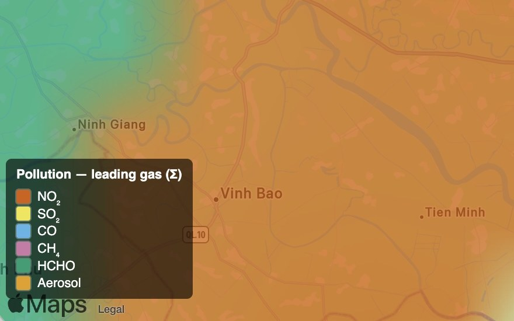

Objective, comparable environmental intelligence — air quality, land cover and vegetation — worldwide, on a like-for-like basis.
Environmental monitoring needs objective, comparable signals over large areas — not point sensors and one-off surveys. Whether it is air quality, land-cover change, or vegetation and wetland condition, the value is in a consistent, worldwide, like-for-like measurement that separates real change from seasonal noise.
SkySpera delivers Sentinel-5P trace gases as absolute readings and year-on-year change, training-free land-cover classification, and 2 m vegetation and moisture indices — global coverage, frequent refresh, no ground network required.
The result is credible environmental intelligence for regulators, agencies and industry: where emissions come from and how they trend, how land cover is changing, and how vegetation and water respond over time.

Ten calibrated spectral bands at 2–4 m — the analytical engine behind NDVI, moisture, burn and mineral indices.
More info →
Nightly 25 m night-lights, super-resolved from NASA Black Marble, for power, outage and activity tracking.
More info →
Global trace-gas monitoring — NO₂, SO₂, CO, CH₄, HCHO and aerosols — absolute and year-on-year.
More info →
Live vessel tracks (AIS) overlaid on cloud-piercing SAR — every ship that reports, and the ones that don't.
More info →
Physics-based, training-free land-cover and built-up mapping — built-up, roads, cropland, water and more from one representation.
More info →Tell us your area of interest and we'll show you what SkySpera can do with it.
Talk to us